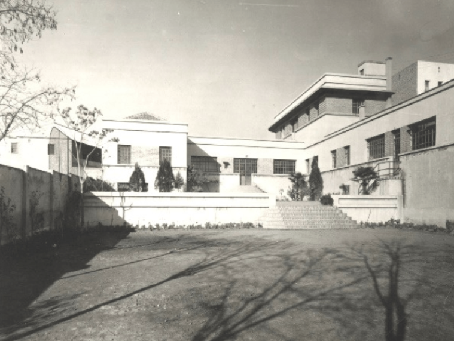
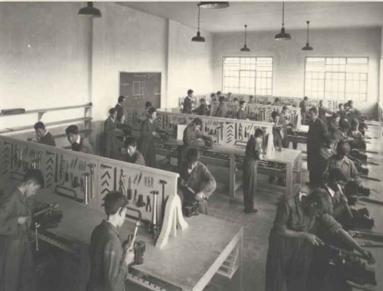
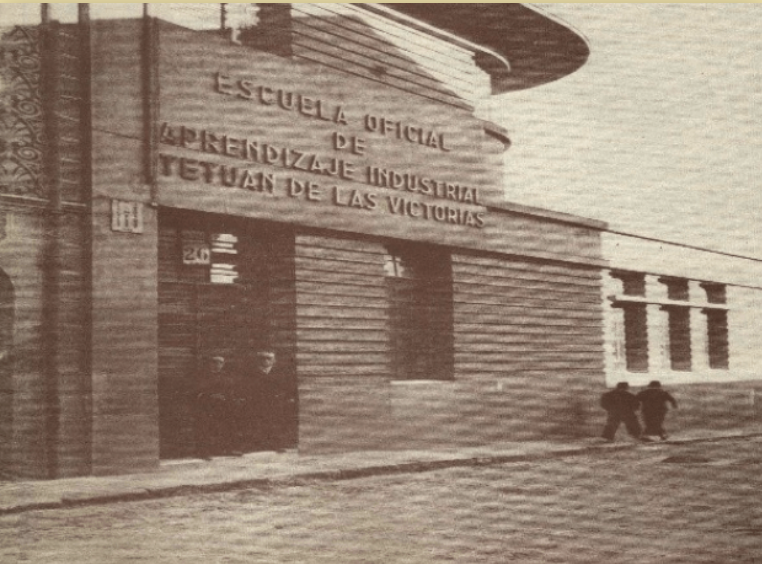
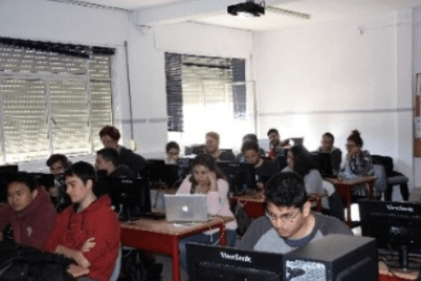
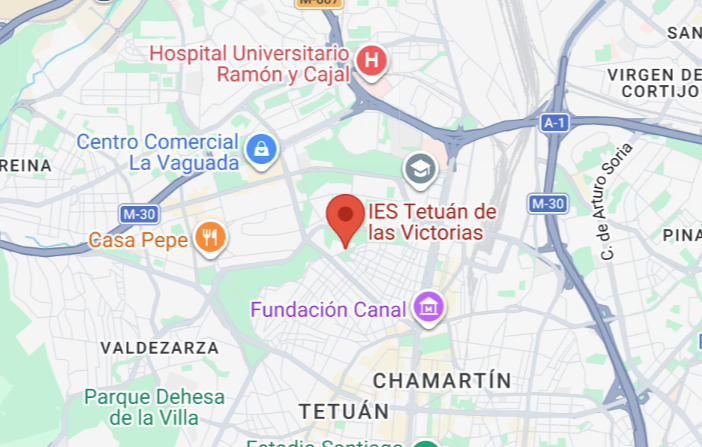

El IES Tetuán de las Victorias es un centro pionero en la enseñanza pública de la Formación Profesional en España y el más antiguo existente en la actualidad. Es uno de los tres primeros centros que se crearon para establecer el primer sistema reglado de enseñanzas profesionales dentro del marco del Estatuto de Formación Profesional de 1928.



El 13 de octubre de 1933 se inauguró como Escuela de Orientación Profesional y Aprendizaje Chamartín de la Rosa, situada en la calle Castillejos, hoy calle Limonero, en el municipio de Chamartín de la Rosa, uno de los más grandes de España en ese momento. La preparación de los alumnos consistía en una formación profesional en tres talleres: ajuste, carpintería y forja-cerrajería y una formación general que incluía aritmética, geometría, dibujo, gramática, geografía e historia. En 1954 el nombre del centro cambió y pasó a llamarse Tetuán de las Victorias, nombre del distrito en el que se encontraba, debido a que el municipio de Chamartín de la Rosa había desaparecido, anexionándose a Madrid en 1948.
La oferta educativa, así mismo, se ha ido adaptando a las necesidades sociales, por lo que los estudios que comenzaron en su inauguración han ido desapareciendo. La rama de madera desapareció en el curso 1984/1985 y la rama de metal en el curso 1990/1991.
En 1953 existía ya un taller de electricidad, aunque es en 1959 cuando se instaura definitivamente la rama, que continuó hasta el curso 2002/2003. En el curso 1998-1999 parte del centro se trasladó a la calle Vía Límite, esquina Avenida de Asturias, haciéndolo en su totalidad en el curso 2000-2001. Desde el curso 1998-1999 hasta el 2010-2011 se impartió la Educación Secundaria Obligatoria (ESO).
En la actualidad se estudian Ciclos Formativos de Formación Profesional de tres familias profesionales:
- Administración, que se inició en 1977
- Informática, impartida desde 1985
- Turismo, incorporada en 2004.

Ubicación:
El instituto se encuentra en la calle: Vía Límite, 14, Madrid 28029. Para llegar a él en transporte público la parada de metro más cercana es La Ventilla (Línea 9) y los autobuses con las paradas más cercanos al recinto son el 42 y el 127.

Instalaciones:
Sus instalaciones destacan por estar enfocadas en la Formación Profesional de familias como Informática y Comunicaciones (donde se imparten ciclos como DAW, DAM o ASIR) y Administración y Gestión.
Principales espacios e instalaciones: